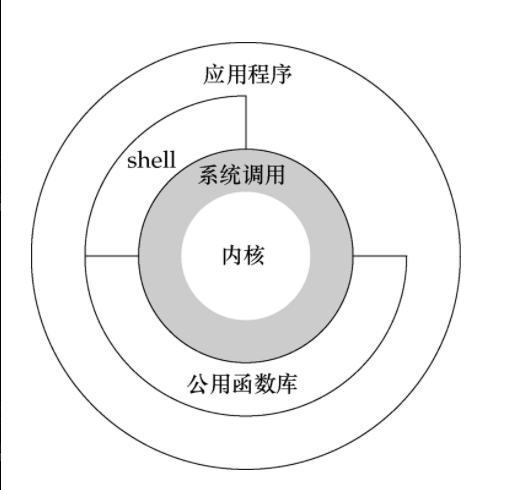

一、shell介绍
1、什么是shell
shell是c语法编写的，是用户和liunx内核沟通的桥梁，即是命令语法，也是解释性编程语言。
内核处理的都是二进制，而用户处理的都是高级语法，系统开发人员可以通过shell快速操作计算机。

二、shell功能
1、解析你的命令
| [root@localhost ~]# echo "helloword"helloword
helloword
|
2、启动程序
1
2
3
4
| [root@localhost ~]
[root@localhost ~]
root 2111 1 0 01:13 ? 00:00:28 redis-server *:6379
root 2501 2469 0 05:53 pts/0 00:00:00 grep --color=auto redis
|
3、输入输出重定向
1
2
3
4
| [root@localhost ~]# wc -c < testmail.txt
27
[root@localhost ~]# echo "helloworld" >> test0716.txt
|
4、管道连接
1
2
3
| [root@localhost ~]# echo "hello world" | sed 's/world/亲/'
hello 亲
|
5、文件名置换(echo /*)
1
2
3
4
5
| [root@localhost ~]# echo ${user-root}
root
[root@localhost ~]# user="bktest"
[root@localhost ~]# echo $? #判断上一条命令是否执行成，0代表成功
0
|
6、变量维护
1
2
3
4
5
| [root@localhost ~]# echo $USER #当前用户
root
[root@localhost ~]# echo $USER #当前用户
root
|
7、环境控制
1
2
3
4
| [root@localhost ~]# echo $HOME #用户登录的目录
/root
[root@localhost ~]# echo $UID #用户标识0
|
8、shell编程
1
2
3
4
5
6
7
8
9
10
11
12
| #!/bin/sh
seconds_left=15
echo "请等待${seconds_left}秒……
"while [ $seconds_left -gt 0 ];do
echo -n $seconds_left
sleep 1 seconds_left=$(($seconds_left - 1))
echo -ne "\r \r"
done
echo "done!"
|
输出倒计时15秒
三、shell脚本精髓
shell脚本就是将完成一个任务的所有命令按照执行的先后顺序，自上而下写入一个文本文件中，然后给予执行权限。
举例示范：
1
2
3
4
5
6
7
8
9
| [root@localhost test0717]
yum -y install wget gcc pcre-devel zlib-devel
wget http://nginx.org/download/nginx-1.16.0.tar.gz
cd nginx-1.16.0
|
1
2
3
4
5
6
| ./configure --prefix=/usr/local/nginx
make
make install
[root@localhost test0717]
[root@localhost test0717]
|
nginx安装成功，验证并启动
1
2
3
4
5
6
7
8
9
10
11
12
13
14
15
16
17
18
19
| ... ...
cp conf/nginx.conf '/usr/local/nginx/conf/nginx.conf.default'
test -d '/usr/local/nginx/logs' \
|| mkdir -p '/usr/local/nginx/logs'
test -d '/usr/local/nginx/logs' \
|| mkdir -p '/usr/local/nginx/logs'
test -d '/usr/local/nginx/html' \
|| cp -R html '/usr/local/nginx'
test -d '/usr/local/nginx/logs' \
|| mkdir -p '/usr/local/nginx/logs'
make[1]: Leaving directory `/root/test0717/nginx-1.16.0'
[root@localhost test0717]# cd /usr/local/nginx/
[root@localhost nginx]# ls
conf html logs sbin
[root@localhost nginx]# ./sbin/nginx
[root@localhost nginx]# ps -ef|grep nginx
root 109211 1 0 06:41 ? 00:00:00 nginx: master process ./sbin/nginx
nobody 109212 109211 0 06:41 ? 00:00:00 nginx: worker process
root 109214 103997 0 06:41 pts/0 00:00:00 grep --color=auto nginx
|